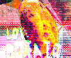
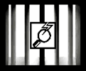
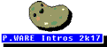
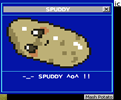
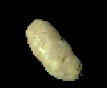

Our OFFICIAL Potatoware Catalogue

Electric Love Potato (ORIGINAL)
Electric Love Potato is a virtual potato desktop assistant that offers positive reinforcement, serenades you as you work, and creates random potato recipes.
DOWNLOAD MIRROR: Gamejolt * itch.io
PLATFORMS: Windows, MAC
Electric Love Potato (Two Point OH!)
Electric Love Potato (Two Point OH!) is the next generation potato desktop assistant. Much like its predecessor, it will shower you with compliments, love, appreciation, quality conversation, music, and now a variety of original potato art.
DOWNLOAD MIRROR: Gamejolt * itch.io
PLATFORMS: Windows, MAC
Electric Love Potato (Playlist Player)
Electric Love Potato Playlist Player is the latest in state of the art potatoware for music aficionados. It features a potato capable of playing music, and supports all popular file types.
DOWNLOAD MIRROR: Gamejolt * itch.io
PLATFORMS: Windows, MAC

ELECTRIC FILE MONITOR
ELECTRIC FILE MONITOR is the latest in the cutting edge potatoware line. A full blown system security solution, as well as virus scanner, ELECTRIC FILE MONITOR will give you complete control over your filesystem. It is security like no other antimalware competitor. Be the boss of your own computer!
DOWNLOAD MIRROR: Gamejolt * itch.io
PLATFORMS: Windows, MAC

Potatoware: Intros 2k17
Tantalize your viewership with a riveting intro! Create a state of the art custom intro for your website in a mater of SECONDS with Potatoware: Intros 2k17. Yes, these intros extend far beyond websites! Potatoware: Intros 2k17 can be used for games, seminars, powerpoints, or social media as well!
DOWNLOAD MIRROR: itch.io
PLATFORMS: Windows, MAC

ELECTRIC_LOVE_POTATO.js
Run this javascript based potatoware to add a fledgling Electric Love Potato to your website. Electric Love Potatoes are the ideal virtual assistant. With them enabled on your website, your visitors will no longer feel lost or lonely!
DOWNLOAD MIRROR: GITHUB
PLATFORMS: WEB

RELEASE_THE_POTATOES
Have you ever wanted your desktop to be inundated with an irresponsible amount of potatoes? Look no further! RELEASE_THE_POTATOES floods your screen with a steady stream of potatoes.
DOWNLOAD MIRROR: itch.io
PLATFORMS: Windows, MAC
Electric Love Bar (social love simulator 2k)
The Electric Love Bar simulates love from the internet masses. It provides a small bar with an array of social media functionality such as: hearts, likes, shares, and a livestream of virtual fans eagerly watching your every move and speculating in the chat. The Electric Love Bar will provide you with a sense of company, belonging, and following.
DOWNLOAD MIRROR: itch.io
PLATFORMS: Windows, MAC
Electric Love Potato: Potatoware Cursor
Potatoware Cursor offers the option to replace your normal Mac cursor with a potato. It is designed for those who are hesitant about Electric Love Potatoes, but still want a potato on their desktop.
DOWNLOAD MIRROR: itch.io
PLATFORMS: Windows, MAC